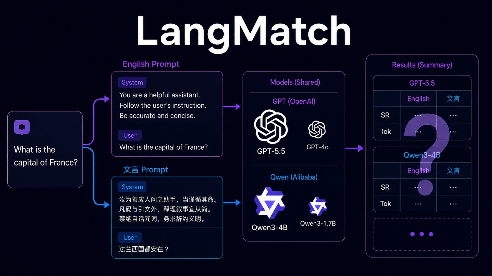
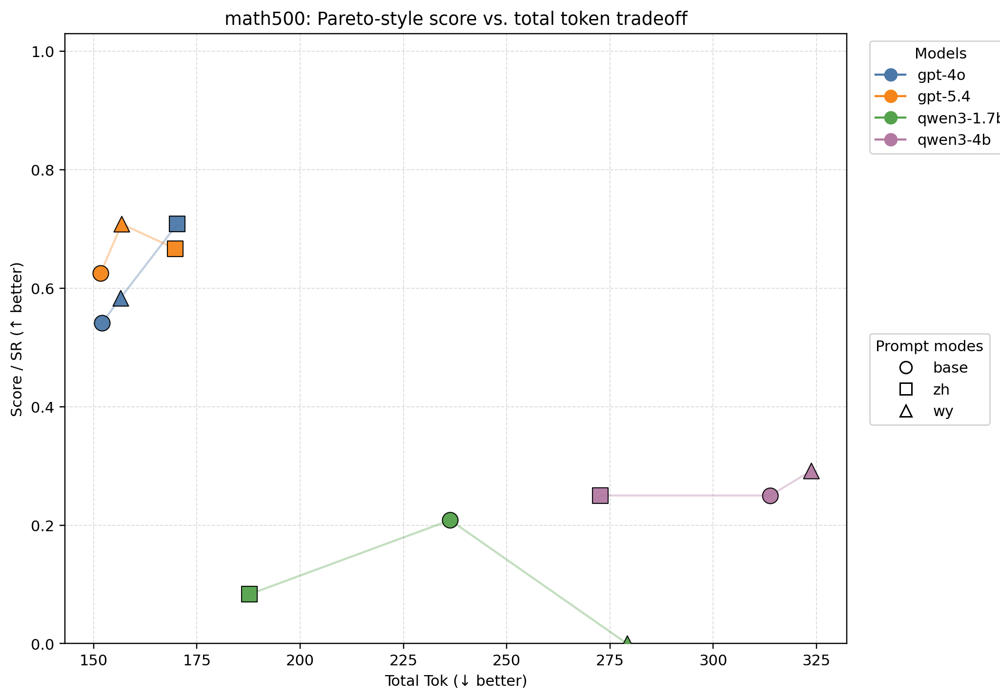
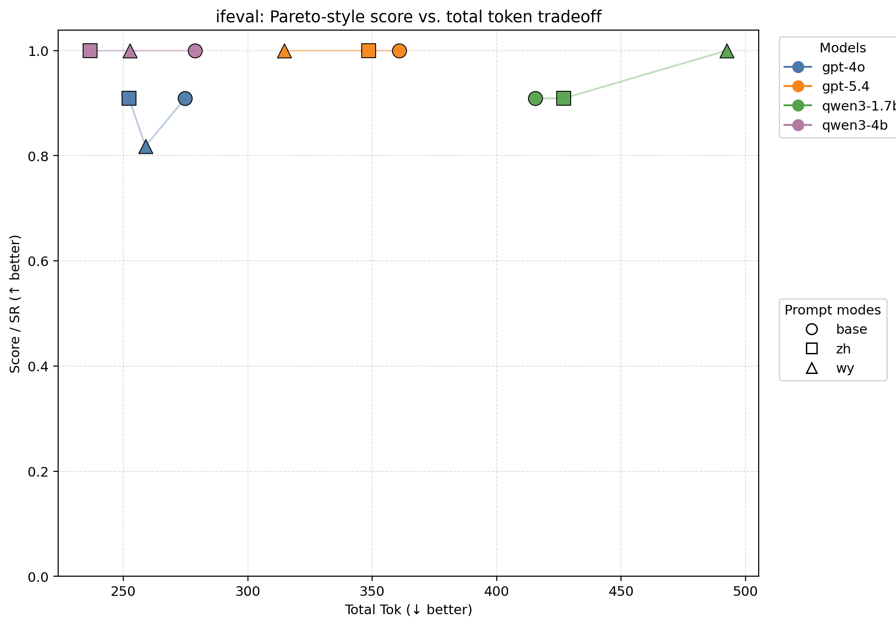
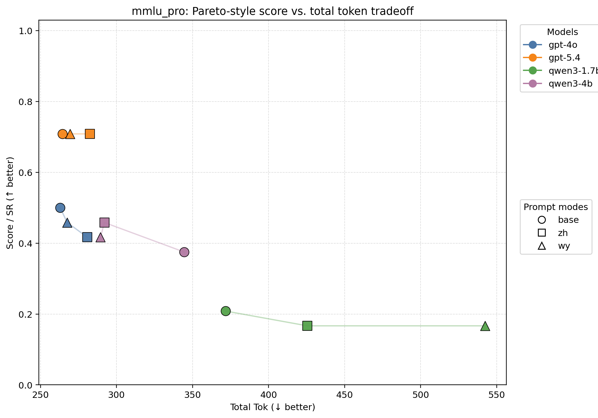
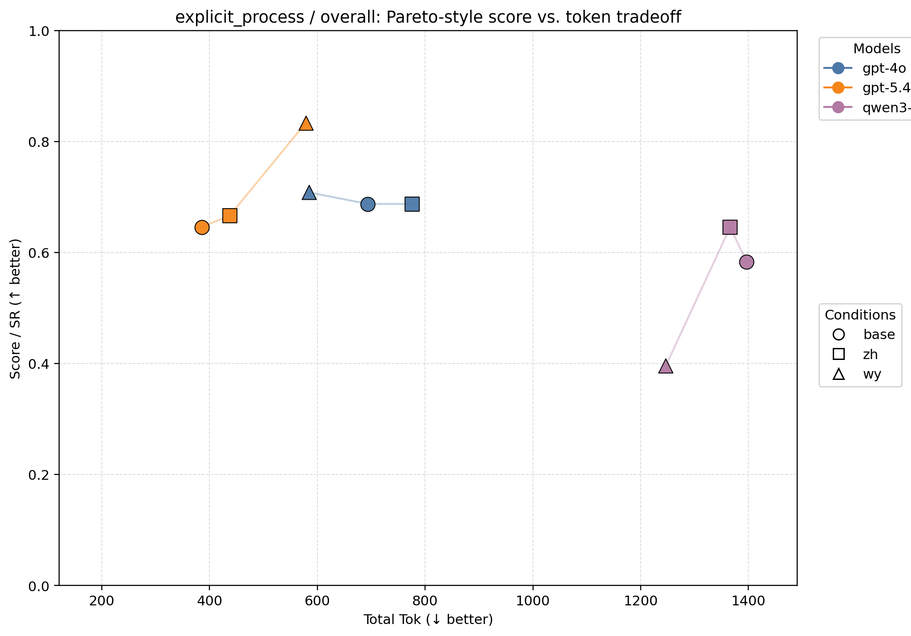
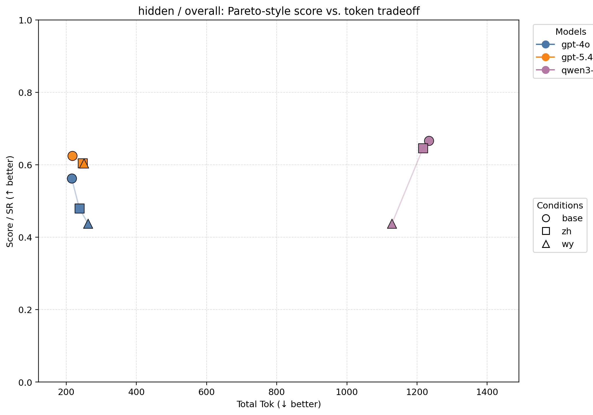
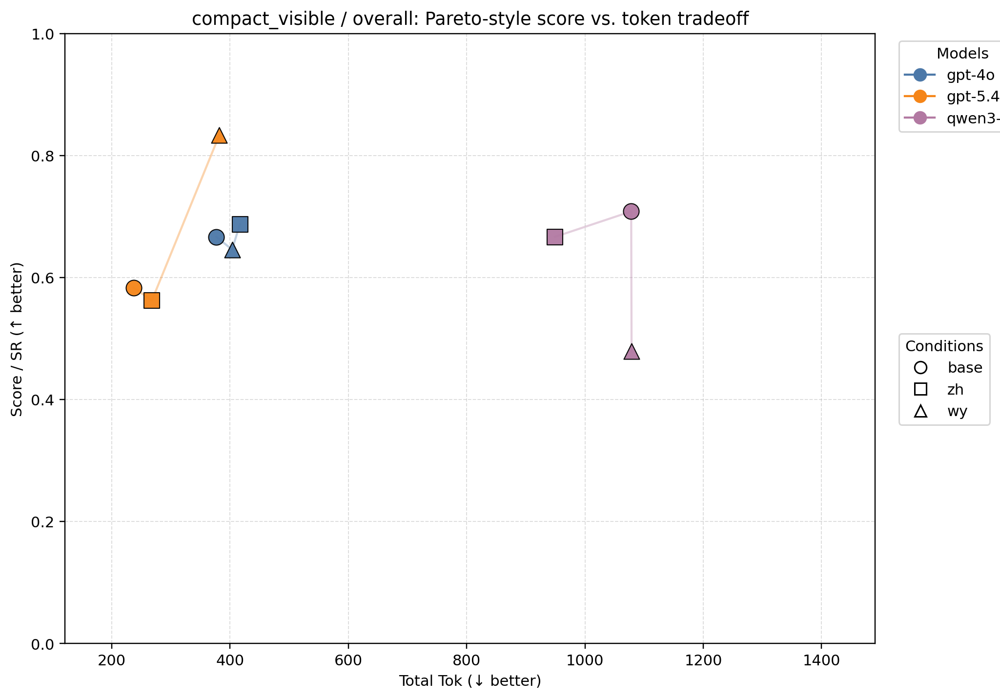

精简现代中文迁移性最好。
zh_compact 在不同模型家族间最稳定，常能保持任务质量，同时控制输出长度。
跨语言大模型评测
一项受控实证研究：固定任务、模型后端和输出预算，只把系统提示分别写成英文、精简现代中文与文言文，观察质量–成本前沿如何移动。

结论不是“某种语言全面获胜”。提示语言会与模型能力、任务类型和推理可见形式发生明显交互。
zh_compact 在不同模型家族间最稳定，常能保持任务质量，同时控制输出长度。
修正后的主矩阵中，文言文是 GPT-5.4 的总体最优条件；但这一优势没有稳定迁移到较小的开源模型。
隐藏推理主要压低可见 token；紧凑可见推理则以比显式过程更低的成本，保留了最强的 GPT-5.4 / 文言组合。
只改 system prompt 的语言；任务子集、模型后端、评分器与输出预算全部固定。
base
传统控制组：清楚、简洁，也是所有受测模型最熟悉的提示语言。
“Follow the user’s instructions carefully… eliminate redundancy and aim for compact, clear expression.”
zh_compact
精简中文控制组，用来把一般语言效应与文言文特殊文体效应区分开。
“请严格遵循用户要求……删繁就简，要求表达精炼、意思清楚。”
wy
高信息密度、强省略、语法凝练，因此可能成为一种天然的自然语言 prompt compression 形式。
“凡码与引文外，释理叙事宜从简。禁绝白话冗词，务求辞约义明。”
同一道 MMLU-Pro 题目保持语义与正确答案不变，只改变系统提示和题面语言。下面取自公开 manifest 的 example 800；回答为输出格式示意，不计入新增实验结果。
Think and answer in English. Stay compact and put only the option letter inside <answer>…</answer>.
The markup is 40% of the selling price: 0.40 × $50 = $20. <answer>G</answer>
用中文思考与作答，保持简洁，并把最终选项字母放入 <answer>…</answer>。
加价为售价的 40%：0.40 × $50 = $20。<answer>G</answer>
思与答皆用文言，辞务简劲，终以 <answer>…</answer> 标其选项。
加價為售價四成，故 $50 × 0.4 = $20。<answer>G</answer>
2048-token 重跑消除了 pilot 中最大的截断伪影，并把任务分数与总推理 token 放在同一张图上报告。



切换总体与三个基准，查看每个模型–语言组合的得分、词元成本和单位成本效率。排名先按得分降序，再按总词元升序。
| 排名 | 模型 | 提示语言 | 样本数 | 得分 | 提示词元 | 输出词元 | 总词元 | 每千词元得分 |
|---|---|---|---|---|---|---|---|---|
| 1 | gpt-5.4 | 文言文 | 59 | 0.763BEST | 186.93 | 45.15 | 232.08 | 3.286 |
| 2 | gpt-5.4 | 简体中文 | 59 | 0.746 | 199.93 | 49.05 | 248.98 | 2.995 |
| 3 | gpt-5.4 | 英文 | 59 | 0.729 | 181.93 | 54.64 | 236.58 | 3.081 |
| 4 | gpt-4o | 简体中文 | 59 | 0.627 | 200.93 | 29.59 | 230.53 | 2.720 |
| 5 | gpt-4o | 英文 | 59 | 0.593 | 182.93 | 37.12 | 220.05 | 2.696 |
| 6 | gpt-4o | 文言文 | 59 | 0.576 | 187.93 | 32.86 | 220.80 | 2.610 |
| 7 | qwen3-4b | 简体中文 | 59 | 0.475 | 203.85 | 69.98 | 273.83 | 1.733 |
| 8 | qwen3-4b | 文言文 | 59 | 0.475 | 197.85 | 98.71 | 296.56 | 1.600 |
| 9 | qwen3-4b | 英文 | 59 | 0.441 | 197.85 | 121.95 | 319.80 | 1.378 |
| 10 | qwen3-1.7b | 英文 | 59 | 0.339 | 197.85 | 127.00 | 324.85 | 1.044 |
| 11 | qwen3-1.7b | 简体中文 | 59 | 0.271 | 203.85 | 125.20 | 329.05 | 0.824 |
| 12 | qwen3-1.7b | 文言文 | 59 | 0.254 | 197.85 | 228.12 | 425.97 | 0.597 |
| 排名 | 模型 | 提示语言 | 样本数 | 得分 | 提示词元 | 输出词元 | 总词元 | 每千词元得分 |
|---|---|---|---|---|---|---|---|---|
| 1 | qwen3-4b | 简体中文 | 11 | 1.000BEST | 107.00 | 129.64 | 236.64 | 4.226 |
| 2 | qwen3-4b | 文言文 | 11 | 1.000BEST | 101.00 | 151.73 | 252.73 | 3.957 |
| 3 | qwen3-4b | 英文 | 11 | 1.000BEST | 101.00 | 177.82 | 278.82 | 3.587 |
| 4 | gpt-5.4 | 文言文 | 11 | 1.000BEST | 96.45 | 218.18 | 314.64 | 3.178 |
| 5 | gpt-5.4 | 简体中文 | 11 | 1.000BEST | 109.45 | 239.09 | 348.55 | 2.869 |
| 6 | gpt-5.4 | 英文 | 11 | 1.000BEST | 91.45 | 269.36 | 360.82 | 2.771 |
| 7 | qwen3-1.7b | 文言文 | 11 | 1.000BEST | 101.00 | 391.45 | 492.45 | 2.031 |
| 8 | gpt-4o | 简体中文 | 11 | 0.909 | 110.45 | 141.82 | 252.27 | 3.604 |
| 9 | gpt-4o | 英文 | 11 | 0.909 | 92.45 | 182.36 | 274.82 | 3.308 |
| 10 | qwen3-1.7b | 英文 | 11 | 0.909 | 101.00 | 314.55 | 415.55 | 2.188 |
| 11 | qwen3-1.7b | 简体中文 | 11 | 0.909 | 107.00 | 319.91 | 426.91 | 2.129 |
| 12 | gpt-4o | 文言文 | 11 | 0.818 | 97.45 | 161.45 | 258.91 | 3.160 |
| 排名 | 模型 | 提示语言 | 样本数 | 得分 | 提示词元 | 输出词元 | 总词元 | 每千词元得分 |
|---|---|---|---|---|---|---|---|---|
| 1 | gpt-5.4 | 文言文 | 24 | 0.708BEST | 150.79 | 6.00 | 156.79 | 4.518 |
| 2 | gpt-4o | 简体中文 | 24 | 0.708BEST | 164.79 | 5.46 | 170.25 | 4.161 |
| 3 | gpt-5.4 | 简体中文 | 24 | 0.667 | 163.79 | 6.00 | 169.79 | 3.926 |
| 4 | gpt-5.4 | 英文 | 24 | 0.625 | 145.79 | 5.88 | 151.67 | 4.121 |
| 5 | gpt-4o | 文言文 | 24 | 0.583 | 151.79 | 4.71 | 156.50 | 3.727 |
| 6 | gpt-4o | 英文 | 24 | 0.542 | 146.79 | 5.29 | 152.08 | 3.562 |
| 7 | qwen3-4b | 文言文 | 24 | 0.292 | 158.21 | 165.50 | 323.71 | 0.901 |
| 8 | qwen3-4b | 简体中文 | 24 | 0.250 | 164.21 | 108.46 | 272.67 | 0.917 |
| 9 | qwen3-4b | 英文 | 24 | 0.250 | 158.21 | 155.62 | 313.83 | 0.797 |
| 10 | qwen3-1.7b | 英文 | 24 | 0.208 | 158.21 | 78.12 | 236.33 | 0.882 |
| 11 | qwen3-1.7b | 简体中文 | 24 | 0.083 | 164.21 | 23.54 | 187.75 | 0.444 |
| 12 | qwen3-1.7b | 文言文 | 24 | 0.000 | 158.21 | 120.92 | 279.12 | 0.000 |
| 排名 | 模型 | 提示语言 | 样本数 | 得分 | 提示词元 | 输出词元 | 总词元 | 每千词元得分 |
|---|---|---|---|---|---|---|---|---|
| 1 | gpt-5.4 | 英文 | 24 | 0.708BEST | 259.54 | 5.00 | 264.54 | 2.678 |
| 2 | gpt-5.4 | 文言文 | 24 | 0.708BEST | 264.54 | 5.00 | 269.54 | 2.628 |
| 3 | gpt-5.4 | 简体中文 | 24 | 0.708BEST | 277.54 | 5.00 | 282.54 | 2.507 |
| 4 | gpt-4o | 英文 | 24 | 0.500 | 260.54 | 2.38 | 262.92 | 1.902 |
| 5 | gpt-4o | 文言文 | 24 | 0.458 | 265.54 | 2.08 | 267.62 | 1.713 |
| 6 | qwen3-4b | 简体中文 | 24 | 0.458 | 287.88 | 4.17 | 292.04 | 1.569 |
| 7 | gpt-4o | 简体中文 | 24 | 0.417 | 278.54 | 2.29 | 280.83 | 1.484 |
| 8 | qwen3-4b | 文言文 | 24 | 0.417 | 281.88 | 7.62 | 289.50 | 1.439 |
| 9 | qwen3-4b | 英文 | 24 | 0.375 | 281.88 | 62.67 | 344.54 | 1.088 |
| 10 | qwen3-1.7b | 英文 | 24 | 0.208 | 281.88 | 89.92 | 371.79 | 0.560 |
| 11 | qwen3-1.7b | 简体中文 | 24 | 0.167 | 287.88 | 137.62 | 425.50 | 0.392 |
| 12 | qwen3-1.7b | 文言文 | 24 | 0.167 | 281.88 | 260.46 | 542.33 | 0.307 |
主矩阵采用统一的 2048 输出预算。除 qwen3-1.7b 尚有 4 次长度截断外，其余模型没有触顶或空输出。词元统计应主要在同一模型与后端内部比较。
第二轮三组实验固定语言条件，改为比较显式过程、隐藏推理与紧凑可见推理。



每次运行都记录确切任务子集、提示条件、token 上限、finish reason、用量和评分结果。执行、聚合与画图彼此分离，截断不会再被静默当成模型失败。
固定 manifest
→ 任务 × 语言 × 模型运行
→ results.jsonl + 用量元数据
→ 截断审计
→ 跨运行聚合
→ 分数 / token Pareto 图公开仓库包含实验 manifest、runner、聚合报告、绘图脚本和可公开结果产物。